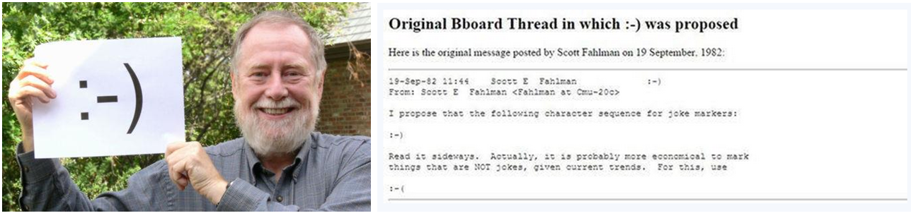
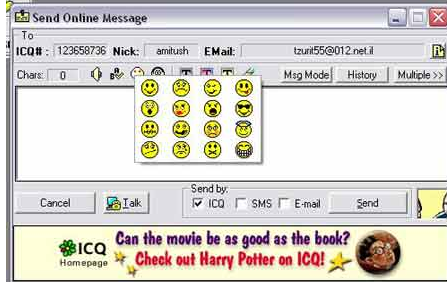

传统的印刷工艺限制了表情包的发展，毕竟耗费心力只能做出一个权当卖萌的符号，并没有实际的用途，这类的表情亦无法成为主流，一直到百年以后的1982年的9月19日，Scott Elliott Fahlman教授在Carnegie Mellon的电子留言板上首次使用了电子形式的表情符号， :-) 及:-( ，这种用图形成为沟通媒介的表情才逐渐进入人们的日常生活。
最开始是用来避免语言的误会而使用表情符号
有趣的是，表情包Emoji作为新时代的交流媒介的发展与崛起，似乎是一种文化的返古现象，但是完全依靠新兴的现代计算机网络技术，才能达到现在高度繁荣。

第一批的12px*12px emoji，相当商业的运用
在1999年，日本的颜文字之父栗田穰崇Shigetaka Kurit，出于开拓公司业务的需求，设计出更多标准化的12px*12px的文字表情图标，拓展寻呼机移动通信产品的沟通媒介，随着科技的日星月异，更多如手机，智能手机，ICQ或者MSN通讯软件的发展，表情图标已被绝大多数计算机系统所兼容的编码“统一码”(Unicode)采纳，普遍应用于各种手机短信和社交网络。
早期的ICQ表情
从上个世纪80十年代发展至今，表情包emoji在三个方面表现出明显的趋势。

Emoji的国际化道路
国际的标准化趋势，以苹果公司为代表的大型企业，重视表情符号在产品的置入及沟通表情的行业应用

日本的颜文字文化
日本的符号化趋势，以各种符号组成的颜文字发展，和基于手机通讯软件的表情商业模式运作

中国表情包浑沌发展
而在中国，表情包则呈现出一种丧心病狂的分裂化发展态势。